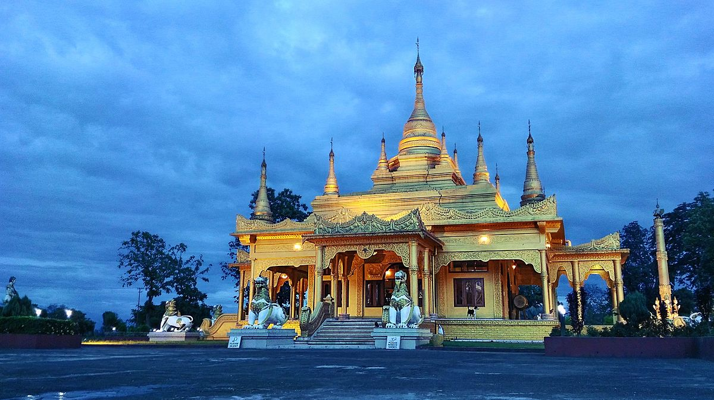
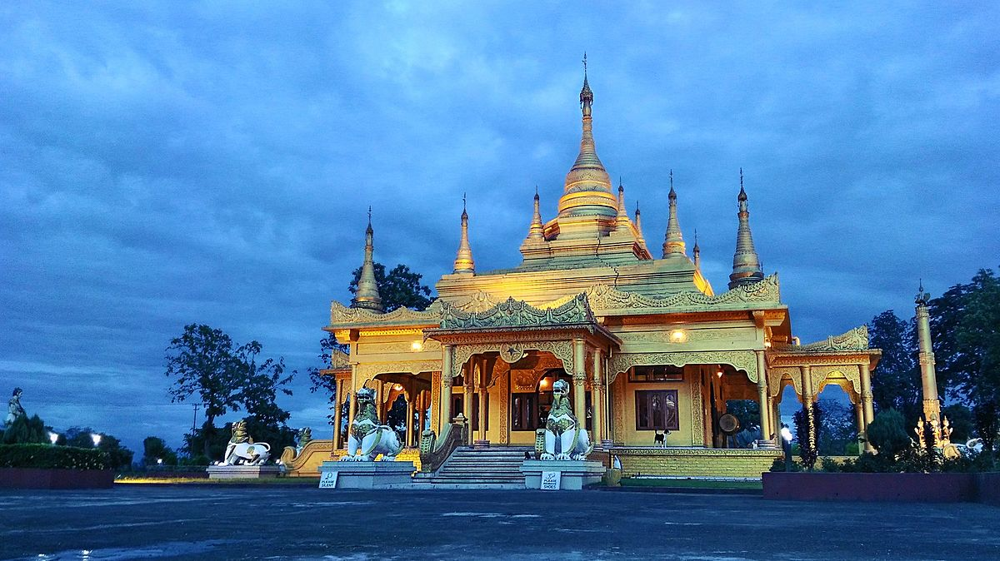
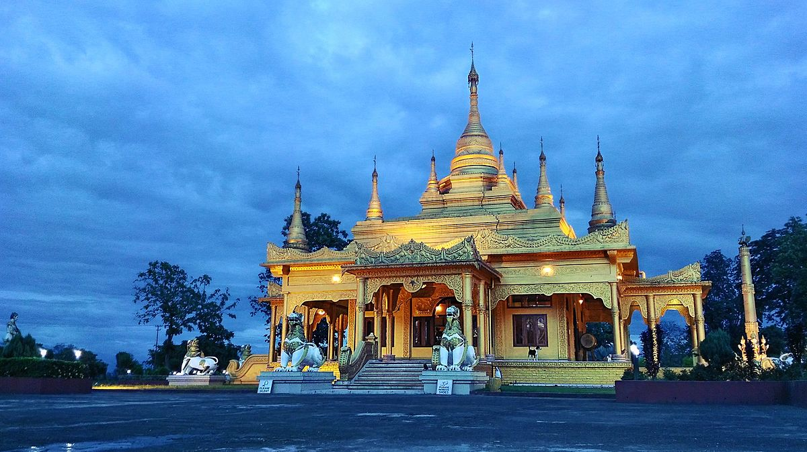

Arunachal Pradesh is the northeasternmost state of India. It
borders the states of Assam and Nagaland to the south. It
shares international borders with Bhutan in the west,
Myanmar in the east, and a disputed border with China in
the north at the McMahon Line. Itanagar is the state
capital of Arunachal Pradesh.

 
